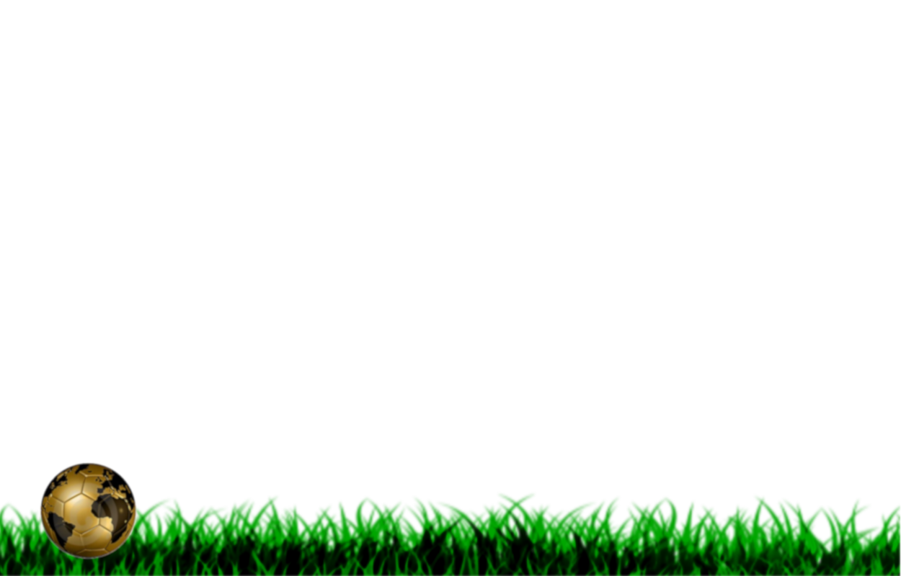
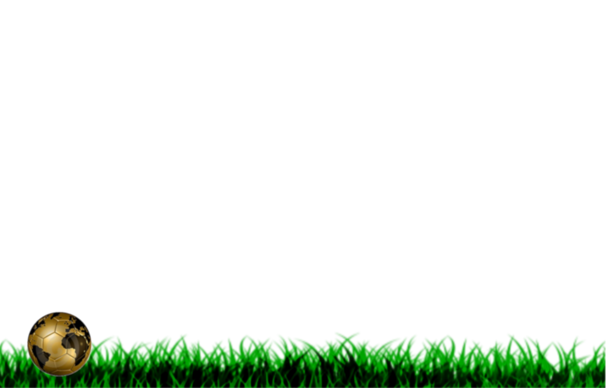

Famous Players
Mohamed Salah Ghaly
Birth date
15 June 1992
number of awards
* CAF Most Promising Talent of the Year: 2012
* UAFA Golden Boy: 2012
* SAFP Golden Player: 2013
* El Heddaf Arab Footballer of the Year: 2013, 2017
* A.S. Roma Player of the Season: 2015–16
* Globe Soccer Best Arab Player of the Year: 2016
* CAF Team of the Year: 2016, 2017
* CAF Africa Cup of Nations Team of the Tournament: 2017
* Premier League Player of the Month: November 2017, February 2018, March 2018
* PFA Player of the Month: November 2017, December 2017, February 2018,March 2018
* African Footballer of the Year: 2017
* BBC African Footballer of the Year: 2017
* BBC Goal of the Month: December 2017, February 2018
* Goal's Arab Player of the Year: 2017
* PFA Players' Player of the Year: 2017–18
* FWA Footballer of the Year: 2017–18
* Premier League Golden Boot: 2017–18
* Premier League Player of the Season: 2017–18
* PFA Team of the Year: 2017–18 Premier League
* Liverpool Player of the Season: 2017–18
* Liverpool Players' Player of the Season: 2017–18
* PFA Fans' Player of the Year: 2017–18
* UEFA Champions League Squad of the Season: 2017–18
* Onze d'Argent: 2017–18
* Honorary Citizen of the Chechen Republic: 2018
* UEFA Men's Player of the Year Award: 2018 (3rd place)
* UEFA Champions League Forward of the Season: 2017–18 (2nd place)
* FIFA Puskás Award: 2018[269]
* The Best FIFA Men's Player: 2018 (3rd place)
* FIFA FIFPro World XI 2nd team: 2018
* NWFA's Premier League Player of the Year: 2018
* Goal's Premier League Player of the Year: 2018
background
Mohamed Salah Ghaly (Arabic: محمد صلاح غالي , Egyptian Arabic pronunciation: [mæˈħam.mæd sˤɑˈlɑːħ ˈɣæːli]) is an Egyptian professional footballer who plays as a forward for Premier League club Liverpool and the Egypt national team. He is considered the world's fourth most expensive player from a transfer value perspective by the CIES
Cristiano Ronaldo dos Santos Aveiro
Birth date
5 February 1985
number of awards
* FIFA Ballon d'Or/Ballon d'Or: 2009, 2010, 2011, 2012, 2015
* European Golden Shoe: 2010, 2012, 2013, 2017, 2018
* FIFA World Player of the Year: 2009
* FIFA World Cup Golden Ball: 2014
* Copa América Golden Ball: 2015
* UEFA Men's Player of the Year Award: 2011, 2015
* UEFA Club Footballer of the Year: 2009
* UEFA Club Forward of the Year: 2009
* Onze d'Or: 2009, 2010–11, 2011–12, 2017–18
* Globe Soccer Awards Best Player of the Year: 2015
* La Liga Best Player: 2008–09, 2009–10, 2010–11, 2011–12, 2012–13, 2014–15, 2017–18
* La Liga Best Forward: 2008–09, 2009–10, 2010–11, 2011–12, 2012–13, 2014–15, 2015–16
* FIFA Club World Cup Golden Ball: 2009, 2011
* FIFA Club World Cup Silver Ball: 2015
* FIFA Club World Cup Final Most Valuable Player: 2009, 2011
* FIFA World Youth Championship Golden Ball: 2005
* FIFA World Youth Championship Golden Shoe: 2005
* Olimpia de Plata (Argentine Footballer of the Year): 2005, 2007, 2008, 2009, 2010, 2011, 2012, 2013, 2015, 2016, 2017
* Copa América Best Young Player: 2007
* FIFPro Young World Player of the Year: 2006, 2007, 2008
* Golden Boy (Young European Footballer of the Year): 2005
* IFFHS World's Best Playmaker: 2015, 2016, 2017
* La Liga Player of the Month: January 2016, April 2017, April 2018, September 2018
* FIFA FIFPro World XI: 2007, 2008, 2009, 2010, 2011, 2012, 2013, 2014, 2015, 2016, 2017, 2018
* UEFA Team of the Year: 2008, 2009, 2010, 2011, 2012, 2014, 2015, 2016, 2017
* UEFA Ultimate Team of the Year
* La Liga Team of the Season: 2014–15, 2015–16
* UEFA La Liga Team of The Season: 2015–16, 2016–17
* FIFA World Cup Dream Team: 2014
* Copa América Dream Team: 2007, 2011, 2015, 2016
* AFA Team of All Time (published 2015)
* UEFA Goal of the Season: 2006–07, 2014–15, 2015–16
* World Soccer Greatest XI of All Time (published 2013)
background
Cristiano Ronaldo dos Santos Aveiro GOIH ComM (European Portuguese: [kɾiʃˈtjɐnu ʁoˈnaɫdu]) is a Portuguese professional footballer who plays as a forward for Italian club Juventus and the Portugal national team. Often considered the best player in the world and regarded by many as one of the greatest players of all time, Ronaldo has a record-tying five Ballon d'Or awards, the most for a European player, and is the first player to win four European Golden Shoes. He has won 26 trophies in his career, including five league titles, five UEFA Champions League titles and one UEFA European Championship. A prolific goalscorer, Ronaldo holds the records for most official goals scored in Europe's top-five leagues (403), the UEFA Champions League (121), the UEFA European Championship (9), as well as those for most assists in the UEFA Champions League (34) and the UEFA European Championship (6). He has scored over 680 senior career goals for club and country.

Lionel Andrés Messi Cuccittini
Birth date
born 24 June 1987
number of awards
* FIFA Ballon d'Or/Ballon d'Or: 2009, 2010, 2011, 2012, 2015
* European Golden Shoe: 2010, 2012, 2013, 2017, 2018
* FIFA World Player of the Year: 2009
* FIFA World Cup Golden Ball: 2014
* Copa América Golden Ball: 2015
* UEFA Men's Player of the Year Award: 2011, 2015
* UEFA Club Footballer of the Year: 2009
* UEFA Club Forward of the Year: 2009
* Onze d'Or: 2009, 2010–11, 2011–12, 2017–18
* Globe Soccer Awards Best Player of the Year: 2015
* La Liga Best Player: 2008–09, 2009–10, 2010–11, 2011–12, 2012–13, 2014–15, 2017–18
* La Liga Best Forward: 2008–09, 2009–10, 2010–11, 2011–12, 2012–13, 2014–15, 2015–16
* FIFA Club World Cup Golden Ball: 2009, 2011[
* FIFA Club World Cup Silver Ball: 2015
* FIFA Club World Cup Final Most Valuable Player: 2009, 2011
* FIFA World Youth Championship Golden Ball: 2005
* FIFA World Youth Championship Golden Shoe: 2005
* Olimpia de Plata (Argentine Footballer of the Year): 2005, 2007, 2008, 2009, 2010, 2011, 2012, 2013, 2015, 2016, 2017
* Copa América Best Young Player: 2007
* FIFPro Young World Player of the Year: 2006, 2007, 2008
* Golden Boy (Young European Footballer of the Year): 2005
* IFFHS World's Best Playmaker: 2015, 2016, 2017
* La Liga Player of the Month: January 2016, April 2017, April 2018, September 2018
* FIFA FIFPro World XI: 2007, 2008, 2009, 2010, 2011, 2012, 2013, 2014, 2015, 2016, 2017, 2018
* UEFA Team of the Year: 2008, 2009, 2010, 2011, 2012, 2014, 2015, 2016, 2017
* UEFA Ultimate Team of the Year
* La Liga Team of the Season: 2014–15, 2015–16
* UEFA La Liga Team of The Season: 2015–16, 2016–17
* FIFA World Cup Dream Team: 2014
* Copa América Dream Team: 2007, 2011, 2015, 2016
* AFA Team of All Time (published 2015)
* UEFA Goal of the Season: 2006–07, 2014–15, 2015–16
* World Soccer Greatest XI of All Time (published 2013)
background
Lionel Andrés Messi Cuccittini (Spanish pronunciation: [ljoˈnel anˈdɾez ˈmesi]) is an Argentine professional footballer who plays as a forward and captains both Spanish club Barcelona and the Argentina national team. Often considered the best player in the world and regarded by many as one of the greatest players of all time, Messi has won a record-tying five Ballon d'Or awards, four of which he won consecutively, and a record five European Golden Shoes. He has spent his entire professional career with Barcelona, where he has won 33 trophies, including nine La Liga titles, four UEFA Champions League titles, and six Copas del Rey. Both a prolific goalscorer and a creative playmaker, Messi holds the records for most official goals scored in La Liga (392), a La Liga season (50), a club football season in Europe (73), a calendar year (91), El Clásico (26), as well as those for most assists in La Liga (153) and the Copa América (11). He has scored over 650 senior career goals for club and country.